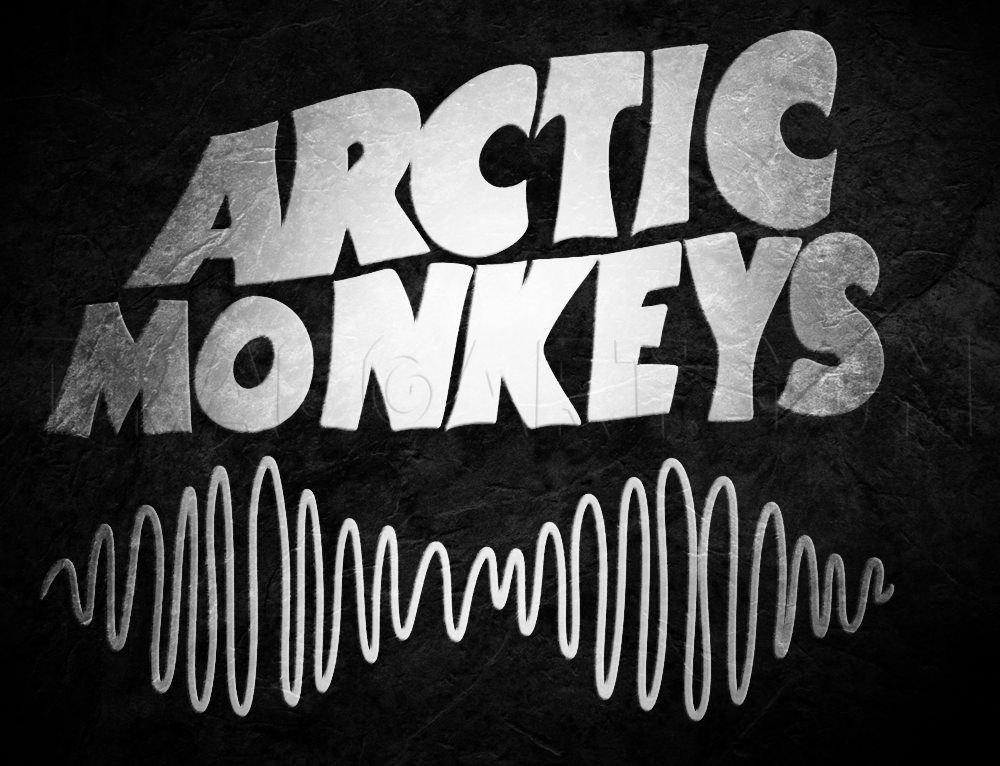
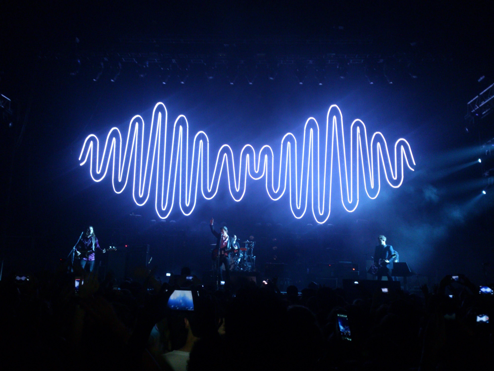

|  |

Alex Turner: Keyboard Instrument. |
Arctic Monkeys are an English rock |
Arctic Monkeys were heralded as one of the first bands |
|
Do you wanna know more information about Arctic Monkeys?-->HERE!<--SHEESH |
|
Hey, Wanna listen to some tunes? -->Click here!<--SHEESH |